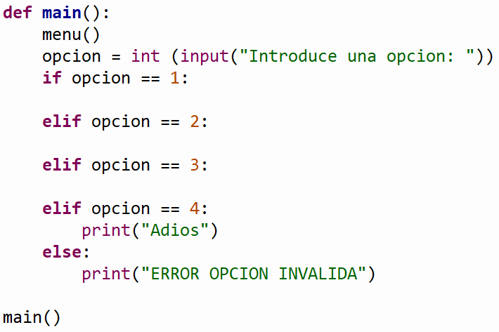
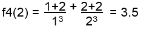

TC1028. Pensamiento computacional para ingeniería . |
||||||||||||||
|
||||||||||||||
. Objetivos:
 Modalidad:

Instrucciones:
 
Ejercicios: . La función f1 (n) que recibe un valor entero mayor o igual a uno y regresa el resultado de la siguiente sumatoria: Por ejemplo:
f1(3) = ( 2(1) - 1 ) + ( 2(2) - 1 ) + ( 2(3) - 1 ) = 9 Casos de prueba:
Input: Número de opción (1.
Función 1)
Por ejemplo:
f2(3) = 40 - 41 + 42 = 41 Casos de prueba:
Input:
Número de opción (2. Función 2)
f3(N) = 3 * 6 * 9 *...* 3N Por ejemplo: Casos de prueba:
Input:
Número de opción (3. Función 3)
 Casos de prueba:
Input:
Número de opción (4. Función 4)
Ejemplos: multiplicacion (3, 4) =12
4 + 4 + 4 = 12 ó multiplicacion (3, 2) = 6
2 + 2 + 2 = 6 ó multiplicacion (1, 2) = 2
2 = 2 ó Casos de prueba:
Input: Número de opción (5.
Multplicación)
1. Funcion 1
3. Funcion 3 4. Funcion 4 5. Multiplicacion 6. Salir Casos de prueba: Input:
Número de opción (6. Salir)
Casos de prueba: Input:
Número de opción (Opción inválida)

Instrucciones para enviar tus archivos por Canvas:
|